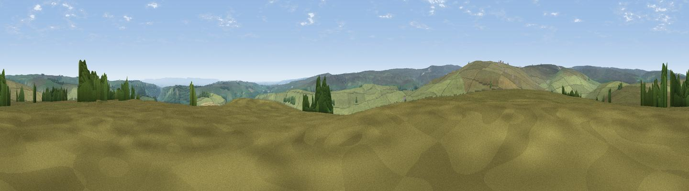

Forty Acres
#19978 in England · top 51% of its area beats it · near MarrickWhere it is
The exact computed spot (NZ 07730 00434). Click the marker for map links.
The view, rendered

A 360° render of this exact spot computed from the terrain model, tree cover and land cover — summer colours, afternoon light, calibrated against photographs of famous viewpoints. Real trees, hedges and buildings will differ in detail.
The panorama
Grey silhouette: terrain skyline in each direction (720 bearings, Earth curvature and refraction included). Dashed green: skyline with trees (+15 m) and buildings (+8 m) as obstacles. Blue strip: how far the ground is visible on each bearing.
Where the view opens
Wedge length = distance to the farthest visible ground on that bearing (vegetation-aware). Rings at 10, 25 and 50 km.
What fills the view
93% grassland · 5% woodland · 1% cropland
Angular shares of the visible panorama (visual magnitude), not map area. Landscape diversity 0.13 (0–1 Shannon).
Key numbers
More beautiful places nearby
The staircase of upgrades: each row has a higher view potential than everything closer. Driving times are estimates from straight-line distance, calibrated against real road routing — check an actual route before setting out.
| Place | Direction | Drive | Score |
|---|---|---|---|
| Munn End | N · 2 km | ~5 min | 54.5 |
| Viewpoint near Reeth | WNW · 4 km | ~10 min | 69.4 |
| Holgate How | NNW · 4 km | ~10 min | 70.4 |
| Whit Fell | S · 6 km | ~13 min | 70.7 |
| Viewpoint near Barningham | NNW · 8 km | ~17 min | 74.1 |
| Viewpoint near West Witton | S · 14 km | ~25 min | 75.6 |
| Viewpoint near East Witton | SSE · 17 km | ~29 min | 77.8 |
| Viewpoint near Over Silton | E · 38 km | ~57 min | 78.5 |
54.39932, -1.88244 · source: dobih hill · position refined by local search. Computed location — check access rights before visiting.